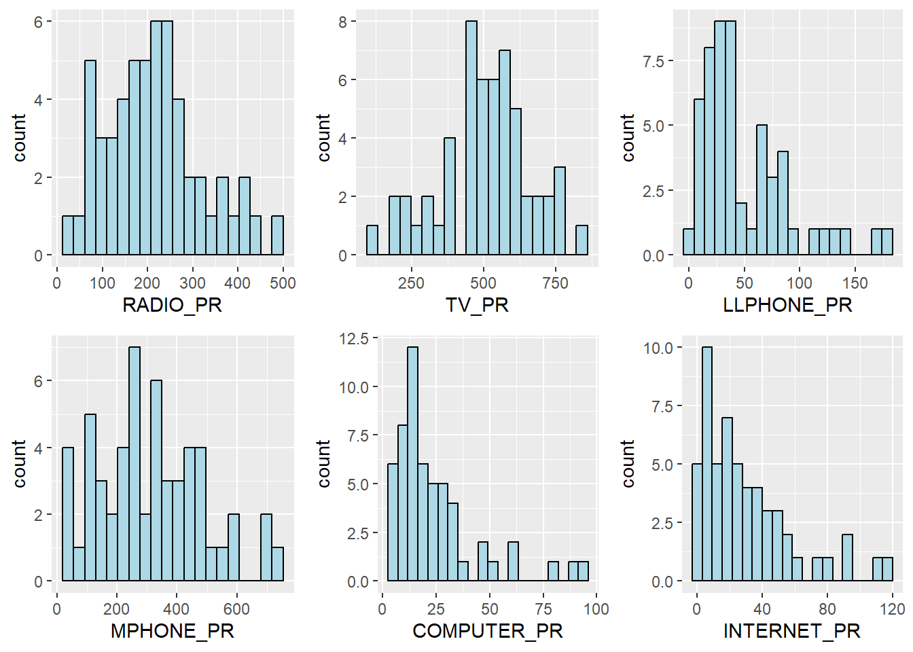
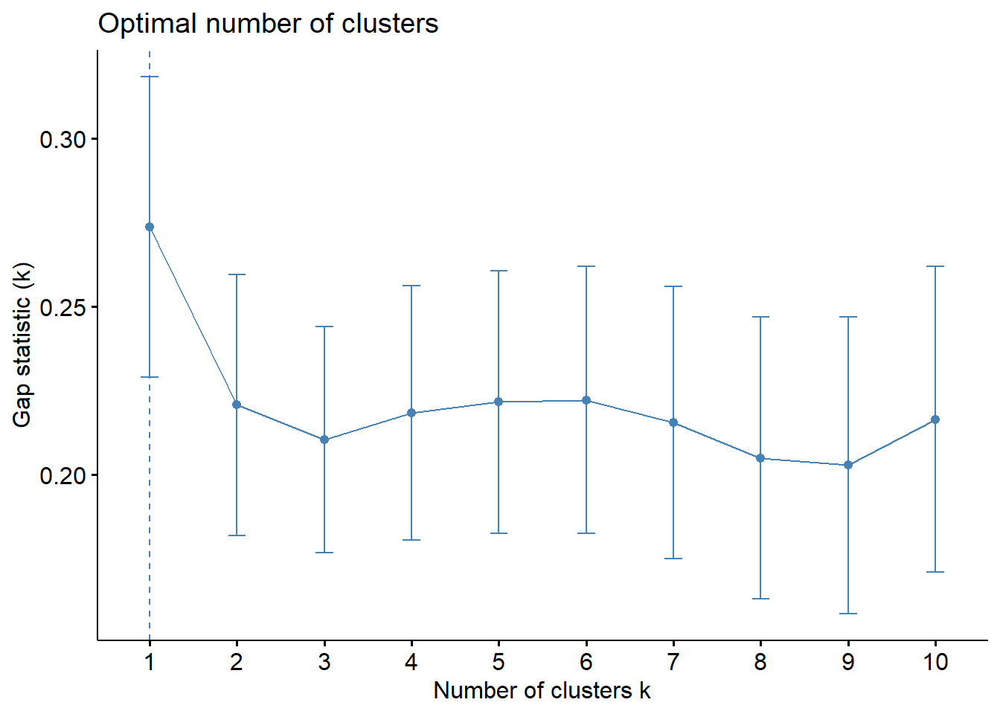
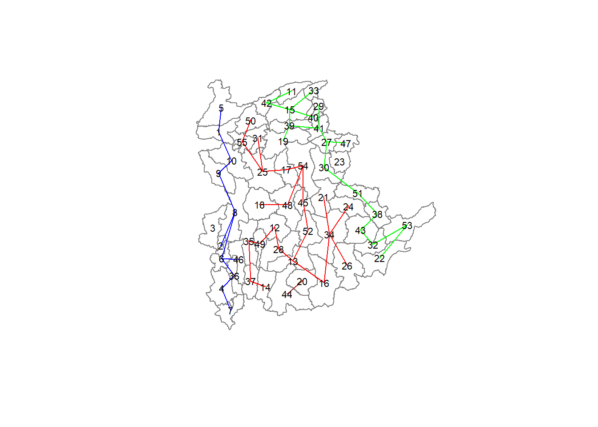
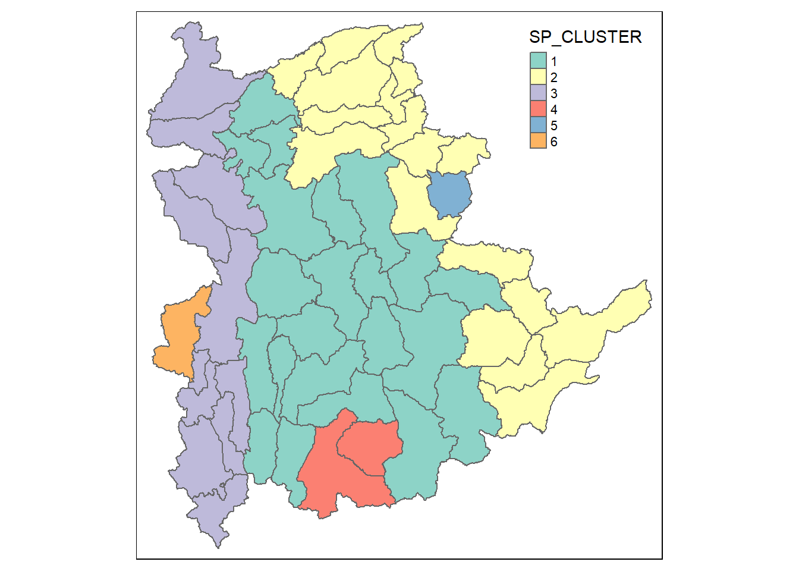
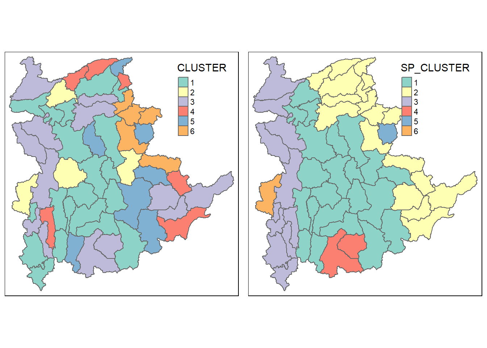

pacman::p_load(sf, rgdal, spdep,
tidyverse,
tmap,
corrplot, ggpubr, heatmaply,
cluster,
factoextra, NbClust, psych,
here)Hand on ex 3 - Chap 5 Geographical Segmentation with Spatially Constrained Clustering Techniques
Overview
Step 1: Loading the required packages
We load the required packages as follow:
Next we generate the link to the file:
shapefile_path <- here("data", "dataMyanmar", "geospatial")
shapefile_path[1] "D:/f4sared/ISSS624/data/dataMyanmar/geospatial"Now we load the shapefile:
(question: why never set the CRS here ?)
shan_sf <- st_read(dsn = shapefile_path,
layer = "myanmar_township_boundaries") %>%
filter(ST %in% c("Shan (East)", "Shan (North)", "Shan (South)"))Reading layer `myanmar_township_boundaries' from data source
`D:\f4sared\ISSS624\data\dataMyanmar\geospatial' using driver `ESRI Shapefile'
Simple feature collection with 330 features and 14 fields
Geometry type: MULTIPOLYGON
Dimension: XY
Bounding box: xmin: 92.17275 ymin: 9.671252 xmax: 101.1699 ymax: 28.54554
Geodetic CRS: WGS 84We check the CRS as follow:
st_crs(shan_sf)Coordinate Reference System:
User input: WGS 84
wkt:
GEOGCRS["WGS 84",
DATUM["World Geodetic System 1984",
ELLIPSOID["WGS 84",6378137,298.257223563,
LENGTHUNIT["metre",1]],
ID["EPSG",6326]],
PRIMEM["Greenwich",0,
ANGLEUNIT["degree",0.0174532925199433],
ID["EPSG",8901]],
CS[ellipsoidal,2],
AXIS["geodetic longitude",east,
ORDER[1],
ANGLEUNIT["degree",0.0174532925199433]],
AXIS["geodetic latitude",north,
ORDER[2],
ANGLEUNIT["degree",0.0174532925199433]]]We also get a view of the data:
glimpse(shan_sf)Rows: 55
Columns: 15
$ OBJECTID <dbl> 163, 203, 240, 106, 72, 40, 194, 159, 61, 124, 71, 155, 101…
$ ST <chr> "Shan (North)", "Shan (South)", "Shan (South)", "Shan (Sout…
$ ST_PCODE <chr> "MMR015", "MMR014", "MMR014", "MMR014", "MMR015", "MMR014",…
$ DT <chr> "Mongmit", "Taunggyi", "Taunggyi", "Taunggyi", "Mongmit", "…
$ DT_PCODE <chr> "MMR015D008", "MMR014D001", "MMR014D001", "MMR014D001", "MM…
$ TS <chr> "Mongmit", "Pindaya", "Ywangan", "Pinlaung", "Mabein", "Kal…
$ TS_PCODE <chr> "MMR015017", "MMR014006", "MMR014007", "MMR014009", "MMR015…
$ ST_2 <chr> "Shan State (North)", "Shan State (South)", "Shan State (So…
$ LABEL2 <chr> "Mongmit\n61072", "Pindaya\n77769", "Ywangan\n76933", "Pinl…
$ SELF_ADMIN <chr> NA, "Danu", "Danu", "Pa-O", NA, NA, NA, NA, NA, NA, NA, NA,…
$ ST_RG <chr> "State", "State", "State", "State", "State", "State", "Stat…
$ T_NAME_WIN <chr> "rdk;rdwf", "yif;w,", "&GmiH", "yifavmif;", "rbdrf;", "uavm…
$ T_NAME_M3 <chr> "မိုးမိတ်", "ပင်းတယ", "ရွာငံ", "ပင်လောင်း", "မဘိမ်း", "ကလော", "ဖယ်ခုံ", "…
$ AREA <dbl> 2703.611, 629.025, 2984.377, 3396.963, 5034.413, 1456.624, …
$ geometry <MULTIPOLYGON [°]> MULTIPOLYGON (((96.96001 23..., MULTIPOLYGON (…Step 2: Import Aspatial Data
Create the link:
aspatial_path <- here("data", "dataMyanmar", "aspatial", "Shan-ICT.csv")
aspatial_path[1] "D:/f4sared/ISSS624/data/dataMyanmar/aspatial/Shan-ICT.csv"Load the CSV file using read_csv() from readr package:
ict <- read_csv (aspatial_path)Rows: 55 Columns: 11
── Column specification ────────────────────────────────────────────────────────
Delimiter: ","
chr (4): District Pcode, District Name, Township Pcode, Township Name
dbl (7): Total households, Radio, Television, Land line phone, Mobile phone,...
ℹ Use `spec()` to retrieve the full column specification for this data.
ℹ Specify the column types or set `show_col_types = FALSE` to quiet this message.Note: the file is saved in the tibble file format. Which is different from sf format.
Next we get the summary statistics:
summary(ict) District Pcode District Name Township Pcode Township Name
Length:55 Length:55 Length:55 Length:55
Class :character Class :character Class :character Class :character
Mode :character Mode :character Mode :character Mode :character
Total households Radio Television Land line phone
Min. : 3318 Min. : 115 Min. : 728 Min. : 20.0
1st Qu.: 8711 1st Qu.: 1260 1st Qu.: 3744 1st Qu.: 266.5
Median :13685 Median : 2497 Median : 6117 Median : 695.0
Mean :18369 Mean : 4487 Mean :10183 Mean : 929.9
3rd Qu.:23471 3rd Qu.: 6192 3rd Qu.:13906 3rd Qu.:1082.5
Max. :82604 Max. :30176 Max. :62388 Max. :6736.0
Mobile phone Computer Internet at home
Min. : 150 Min. : 20.0 Min. : 8.0
1st Qu.: 2037 1st Qu.: 121.0 1st Qu.: 88.0
Median : 3559 Median : 244.0 Median : 316.0
Mean : 6470 Mean : 575.5 Mean : 760.2
3rd Qu.: 7177 3rd Qu.: 507.0 3rd Qu.: 630.5
Max. :48461 Max. :6705.0 Max. :9746.0 Step 3: Deriving new variables
We will use the mutate() function and %>% to get new variables:
ict_derived <- ict %>%
mutate(`RADIO_PR` = `Radio`/`Total households`*1000) %>%
mutate(`TV_PR` = `Television`/`Total households`*1000) %>%
mutate(`LLPHONE_PR` = `Land line phone`/`Total households`*1000) %>%
mutate(`MPHONE_PR` = `Mobile phone`/`Total households`*1000) %>%
mutate(`COMPUTER_PR` = `Computer`/`Total households`*1000) %>%
mutate(`INTERNET_PR` = `Internet at home`/`Total households`*1000) %>%
rename(`DT_PCODE` =`District Pcode`,`DT`=`District Name`,
`TS_PCODE`=`Township Pcode`, `TS`=`Township Name`,
`TT_HOUSEHOLDS`=`Total households`,
`RADIO`=`Radio`, `TV`=`Television`,
`LLPHONE`=`Land line phone`, `MPHONE`=`Mobile phone`,
`COMPUTER`=`Computer`, `INTERNET`=`Internet at home`) We now check the summary of the new derived variables:
summary(ict_derived) DT_PCODE DT TS_PCODE TS
Length:55 Length:55 Length:55 Length:55
Class :character Class :character Class :character Class :character
Mode :character Mode :character Mode :character Mode :character
TT_HOUSEHOLDS RADIO TV LLPHONE
Min. : 3318 Min. : 115 Min. : 728 Min. : 20.0
1st Qu.: 8711 1st Qu.: 1260 1st Qu.: 3744 1st Qu.: 266.5
Median :13685 Median : 2497 Median : 6117 Median : 695.0
Mean :18369 Mean : 4487 Mean :10183 Mean : 929.9
3rd Qu.:23471 3rd Qu.: 6192 3rd Qu.:13906 3rd Qu.:1082.5
Max. :82604 Max. :30176 Max. :62388 Max. :6736.0
MPHONE COMPUTER INTERNET RADIO_PR
Min. : 150 Min. : 20.0 Min. : 8.0 Min. : 21.05
1st Qu.: 2037 1st Qu.: 121.0 1st Qu.: 88.0 1st Qu.:138.95
Median : 3559 Median : 244.0 Median : 316.0 Median :210.95
Mean : 6470 Mean : 575.5 Mean : 760.2 Mean :215.68
3rd Qu.: 7177 3rd Qu.: 507.0 3rd Qu.: 630.5 3rd Qu.:268.07
Max. :48461 Max. :6705.0 Max. :9746.0 Max. :484.52
TV_PR LLPHONE_PR MPHONE_PR COMPUTER_PR
Min. :116.0 Min. : 2.78 Min. : 36.42 Min. : 3.278
1st Qu.:450.2 1st Qu.: 22.84 1st Qu.:190.14 1st Qu.:11.832
Median :517.2 Median : 37.59 Median :305.27 Median :18.970
Mean :509.5 Mean : 51.09 Mean :314.05 Mean :24.393
3rd Qu.:606.4 3rd Qu.: 69.72 3rd Qu.:428.43 3rd Qu.:29.897
Max. :842.5 Max. :181.49 Max. :735.43 Max. :92.402
INTERNET_PR
Min. : 1.041
1st Qu.: 8.617
Median : 22.829
Mean : 30.644
3rd Qu.: 41.281
Max. :117.985 Step 4: EDA Part 1
We will make use of the ggplot for EDA.
We plot the histogram of the radio as follow:
ggplot(data=ict_derived,
aes(x=`RADIO`)) +
geom_histogram(bins=20,
color="black",
fill="light pink")We will next use the box plot to check for outliers:
ggplot(data=ict_derived,
aes(x=`RADIO`)) +
geom_boxplot(color="black",
fill="light pink")
Plot histogram of radio penetration rate:
ggplot(data=ict_derived,
aes(x=`RADIO_PR`)) +
geom_histogram(bins=20,
color="black",
fill="light pink")
We will check the outlier of the Radio Penetration as follow:
ggplot(data=ict_derived,
aes(x=`RADIO_PR`)) +
geom_boxplot(color="black",
fill="light pink")Next, we will create multiple plots first:
radio <- ggplot(data=ict_derived,
aes(x= `RADIO_PR`)) +
geom_histogram(bins=20,
color="black",
fill="light blue")
tv <- ggplot(data=ict_derived,
aes(x= `TV_PR`)) +
geom_histogram(bins=20,
color="black",
fill="light blue")
llphone <- ggplot(data=ict_derived,
aes(x= `LLPHONE_PR`)) +
geom_histogram(bins=20,
color="black",
fill="light blue")
mphone <- ggplot(data=ict_derived,
aes(x= `MPHONE_PR`)) +
geom_histogram(bins=20,
color="black",
fill="light blue")
computer <- ggplot(data=ict_derived,
aes(x= `COMPUTER_PR`)) +
geom_histogram(bins=20,
color="black",
fill="light blue")
internet <- ggplot(data=ict_derived,
aes(x= `INTERNET_PR`)) +
geom_histogram(bins=20,
color="black",
fill="light blue")Using the ggarange() of the ggpubr package, we can plot multiple graphs together:
ggarrange(radio, tv, llphone, mphone, computer, internet,
ncol = 3,
nrow = 2)
Step 5: EDA Part 2
Next we perform relational join using the function left_join().
We will join using the common column “TS_CODE”:
shan_sf <- left_join(shan_sf,
ict_derived,
by=c("TS_PCODE"="TS_PCODE"))We will then do a quick plot of the radio penetration level with qtm() of the tmap package:
qtm(shan_sf, "RADIO_PR")
Next using the “Jenks” classification, we will plot 2 maps.
One for number of houses, the other for the number of radios:
TT_HOUSEHOLDS.map <- tm_shape(shan_sf) +
tm_fill(col = "TT_HOUSEHOLDS",
n = 5,
style = "jenks",
title = "Total households") +
tm_borders(alpha = 0.5)
RADIO.map <- tm_shape(shan_sf) +
tm_fill(col = "RADIO",
n = 5,
style = "jenks",
title = "Number Radio ") +
tm_borders(alpha = 0.5)
tmap_arrange(TT_HOUSEHOLDS.map, RADIO.map,
asp=NA, ncol=2)
We will also look at the map with number of households vs radio penetration rate:
tm_shape(shan_sf) +
tm_polygons(c("TT_HOUSEHOLDS", "RADIO_PR"),
style="jenks") +
tm_facets(sync = TRUE, ncol = 2) +
tm_legend(legend.position = c("right", "bottom"))+
tm_layout(outer.margins=0, asp=0)
Step 6: Correlation Analysis
Before performing cluster analysis, we need to remove variables that are highly correlated to each other.
We do this by using corrplot.mixed() of the corrplot:
cluster_vars.cor = cor(ict_derived[,12:17])
corrplot.mixed(cluster_vars.cor,
lower = "ellipse",
upper = "number",
tl.pos = "lt",
diag = "l",
tl.col = "black")
Above we observe 2 highly correlated variables.
Step 7: Hierarchy Cluster Analysis
Prepare the data
We select the clustering variables now. Notice we use the st_set_geometry(NULL) to exclude the geometry column:
cluster_vars <- shan_sf %>%
st_set_geometry(NULL) %>%
select("TS.x", "RADIO_PR", "TV_PR", "LLPHONE_PR", "MPHONE_PR", "COMPUTER_PR")
head(cluster_vars,10) TS.x RADIO_PR TV_PR LLPHONE_PR MPHONE_PR COMPUTER_PR
1 Mongmit 286.1852 554.1313 35.30618 260.6944 12.15939
2 Pindaya 417.4647 505.1300 19.83584 162.3917 12.88190
3 Ywangan 484.5215 260.5734 11.93591 120.2856 4.41465
4 Pinlaung 231.6499 541.7189 28.54454 249.4903 13.76255
5 Mabein 449.4903 708.6423 72.75255 392.6089 16.45042
6 Kalaw 280.7624 611.6204 42.06478 408.7951 29.63160
7 Pekon 318.6118 535.8494 39.83270 214.8476 18.97032
8 Lawksawk 387.1017 630.0035 31.51366 320.5686 21.76677
9 Nawnghkio 349.3359 547.9456 38.44960 323.0201 15.76465
10 Kyaukme 210.9548 601.1773 39.58267 372.4930 30.94709Next, we will change the names of the row:
row.names(cluster_vars) <- cluster_vars$"TS.x"
head(cluster_vars,10) TS.x RADIO_PR TV_PR LLPHONE_PR MPHONE_PR COMPUTER_PR
Mongmit Mongmit 286.1852 554.1313 35.30618 260.6944 12.15939
Pindaya Pindaya 417.4647 505.1300 19.83584 162.3917 12.88190
Ywangan Ywangan 484.5215 260.5734 11.93591 120.2856 4.41465
Pinlaung Pinlaung 231.6499 541.7189 28.54454 249.4903 13.76255
Mabein Mabein 449.4903 708.6423 72.75255 392.6089 16.45042
Kalaw Kalaw 280.7624 611.6204 42.06478 408.7951 29.63160
Pekon Pekon 318.6118 535.8494 39.83270 214.8476 18.97032
Lawksawk Lawksawk 387.1017 630.0035 31.51366 320.5686 21.76677
Nawnghkio Nawnghkio 349.3359 547.9456 38.44960 323.0201 15.76465
Kyaukme Kyaukme 210.9548 601.1773 39.58267 372.4930 30.94709Next we will delete the TS.x row:
shan_ict <- select(cluster_vars, c(2:6))
head(shan_ict, 10) RADIO_PR TV_PR LLPHONE_PR MPHONE_PR COMPUTER_PR
Mongmit 286.1852 554.1313 35.30618 260.6944 12.15939
Pindaya 417.4647 505.1300 19.83584 162.3917 12.88190
Ywangan 484.5215 260.5734 11.93591 120.2856 4.41465
Pinlaung 231.6499 541.7189 28.54454 249.4903 13.76255
Mabein 449.4903 708.6423 72.75255 392.6089 16.45042
Kalaw 280.7624 611.6204 42.06478 408.7951 29.63160
Pekon 318.6118 535.8494 39.83270 214.8476 18.97032
Lawksawk 387.1017 630.0035 31.51366 320.5686 21.76677
Nawnghkio 349.3359 547.9456 38.44960 323.0201 15.76465
Kyaukme 210.9548 601.1773 39.58267 372.4930 30.94709Data Standardization
Since different variables are used, their range is different. Thus we need to standardize them.
Min Max
We do min-max 0-1 as follow:
shan_ict.std <- normalize(shan_ict)
summary(shan_ict.std) RADIO_PR TV_PR LLPHONE_PR MPHONE_PR
Min. :0.0000 Min. :0.0000 Min. :0.0000 Min. :0.0000
1st Qu.:0.2544 1st Qu.:0.4600 1st Qu.:0.1123 1st Qu.:0.2199
Median :0.4097 Median :0.5523 Median :0.1948 Median :0.3846
Mean :0.4199 Mean :0.5416 Mean :0.2703 Mean :0.3972
3rd Qu.:0.5330 3rd Qu.:0.6750 3rd Qu.:0.3746 3rd Qu.:0.5608
Max. :1.0000 Max. :1.0000 Max. :1.0000 Max. :1.0000
COMPUTER_PR
Min. :0.00000
1st Qu.:0.09598
Median :0.17607
Mean :0.23692
3rd Qu.:0.29868
Max. :1.00000 Z-Score
Next, we perform Z-score standardization as follow:
shan_ict.z <- scale(shan_ict)
describe(shan_ict.z) vars n mean sd median trimmed mad min max range skew kurtosis
RADIO_PR 1 55 0 1 -0.04 -0.06 0.94 -1.85 2.55 4.40 0.48 -0.27
TV_PR 2 55 0 1 0.05 0.04 0.78 -2.47 2.09 4.56 -0.38 -0.23
LLPHONE_PR 3 55 0 1 -0.33 -0.15 0.68 -1.19 3.20 4.39 1.37 1.49
MPHONE_PR 4 55 0 1 -0.05 -0.06 1.01 -1.58 2.40 3.98 0.48 -0.34
COMPUTER_PR 5 55 0 1 -0.26 -0.18 0.64 -1.03 3.31 4.34 1.80 2.96
se
RADIO_PR 0.13
TV_PR 0.13
LLPHONE_PR 0.13
MPHONE_PR 0.13
COMPUTER_PR 0.13After doing this step, the mean and std dev are now 0 and 1 respectively.
Visualize the standardized variables
Next we visualize the variables:
r <- ggplot(data=ict_derived,
aes(x= `RADIO_PR`)) +
geom_histogram(bins=20,
color="black",
fill="light blue")
shan_ict_s_df <- as.data.frame(shan_ict.std)
s <- ggplot(data=shan_ict_s_df,
aes(x=`RADIO_PR`)) +
geom_histogram(bins=20,
color="black",
fill="light blue") +
ggtitle("Min-Max Standardisation")
shan_ict_z_df <- as.data.frame(shan_ict.z)
z <- ggplot(data=shan_ict_z_df,
aes(x=`RADIO_PR`)) +
geom_histogram(bins=20,
color="black",
fill="light blue") +
ggtitle("Z-score Standardisation")
ggarrange(r, s, z,
ncol = 3,
nrow = 1)
Compute Proximity Matrix
We will use dist() of R to compute the proximity matrix:
proxmat <- dist(shan_ict, method = 'euclidean')Compute Hierarchical Clustering
Using hclust() of R stats, we will input the proximity matrix. The putout is a class of hclust that describes a tree that is produced:
hclust_ward <- hclust(proxmat, method = 'ward.D')We can then plot the result as follow:
plot(hclust_ward, cex = 0.8)
Determine optimal clustering algorithm
Since there are many algorithms, it makes sense to try them all. We will get the agglomeration coefficient which measures the amount of clustering structure found.
First we will make a simple list:
m <- c( "average", "single", "complete", "ward")
names(m) <- c( "average", "single", "complete", "ward")We will use the agnes() function of cluster package as follow:
ac <- function(x) {
agnes(shan_ict, method = x)$ac
}
map_dbl(m, ac) average single complete ward
0.8131144 0.6628705 0.8950702 0.9427730 Determine optimal clusters
Gap statistic compares the intra-cluster variation for different numbers of clusters k.
We will compute the gap statistic using clusGap() of cluster package:
“hcut” is from factoextra package.
set.seed(12345)
gap_stat <- clusGap(shan_ict,
FUN = hcut,
nstart = 25,
K.max = 10,
B = 50)
# Print the result
print(gap_stat, method = "firstmax")Clustering Gap statistic ["clusGap"] from call:
clusGap(x = shan_ict, FUNcluster = hcut, K.max = 10, B = 50, nstart = 25)
B=50 simulated reference sets, k = 1..10; spaceH0="scaledPCA"
--> Number of clusters (method 'firstmax'): 1
logW E.logW gap SE.sim
[1,] 8.407129 8.680794 0.2736651 0.04460994
[2,] 8.130029 8.350712 0.2206824 0.03880130
[3,] 7.992265 8.202550 0.2102844 0.03362652
[4,] 7.862224 8.080655 0.2184311 0.03784781
[5,] 7.756461 7.978022 0.2215615 0.03897071
[6,] 7.665594 7.887777 0.2221833 0.03973087
[7,] 7.590919 7.806333 0.2154145 0.04054939
[8,] 7.526680 7.731619 0.2049390 0.04198644
[9,] 7.458024 7.660795 0.2027705 0.04421874
[10,] 7.377412 7.593858 0.2164465 0.04540947Now, using fviz_gap_stat() of factoextra package to find the optimal cluster:
fviz_gap_stat(gap_stat)
Interpreting the dendrograms
Next we will redraw the dendrograms with the optimal number of clusters. This is done using rect.hclust() of R:
plot(hclust_ward, cex = 0.6)
rect.hclust(hclust_ward,
k = 6,
border = 2:5)
Question: How does the algorithm know which cluster to break up ?
Visually driven hierarchical clustering analysis:
Using the function heatmaply() we will build a cluster heat map.
First we need to transform the dataframe into a matrix in order to be able to plot:
shan_ict_mat <- data.matrix(shan_ict)Next we will use function heatmaply() of heatmaply to plot:
heatmaply(normalize(shan_ict_mat),
Colv=NA,
dist_method = "euclidean",
hclust_method = "ward.D",
seriate = "OLO",
colors = Blues,
k_row = 6,
margins = c(NA,200,60,NA),
fontsize_row = 4,
fontsize_col = 5,
main="Geographic Segmentation of Shan State by ICT indicators",
xlab = "ICT Indicators",
ylab = "Townships of Shan State"
)Question:
Why do you show all 5 variables ? Is the segmentation based on all 5 variables ?
Mapping the cluster formed
We will use cutree() of R to prune the tree to that we have 6 cluster:
groups <- as.factor(cutree(hclust_ward, k=6))Next, we will convert the groups into a matrix before combining it to shan_sf:
shan_sf_cluster <- cbind(shan_sf, as.matrix(groups)) %>%
rename(`CLUSTER`=`as.matrix.groups.`)Finally, we will plot the outcome:
qtm(shan_sf_cluster, "CLUSTER")
As shown from the output above, we see that all our cluster appear to be fragmented. This is because a non-spatial method is being used.
Step 8: Spatially constrained clustering - SKATER Approach
In the earlier section, the clusters are not influenced by space, instead they are simply derived based just on the variables alone.
Convert to spatial polygons dataframe
First we need to convert the shan_sf from sf object to the sp object.
We do this via the as_spatial() of sf package:
shan_sp <- as_Spatial(shan_sf)Compute the neighbor list
Using poly2nd() of spdep, we will then compute the neighbor list:
shan.nb <- poly2nb(shan_sp)
summary(shan.nb)Neighbour list object:
Number of regions: 55
Number of nonzero links: 264
Percentage nonzero weights: 8.727273
Average number of links: 4.8
Link number distribution:
2 3 4 5 6 7 8 9
5 9 7 21 4 3 5 1
5 least connected regions:
3 5 7 9 47 with 2 links
1 most connected region:
8 with 9 linksQuestion: How is the neighbor computed here ? Queen ???
Plot the neighbors relationship on a map
plot(shan_sp,
border=grey(.5))
plot(shan.nb,
coordinates(shan_sp),
col="blue",
add=TRUE)Compute the minimum spanning tree
Compute the edge cost
To compute the edge cost , we will use nbcosts() of the spdep package:
lcosts <- nbcosts(shan.nb, shan_ict)What happens above is that the pairwise dissimilarity is calculated for the five variables between the 2 neighbors. This is the notion of a generalized weight for a spatial weight matrix.
Next, we will get the spatial weight matrix using nb2list(). This time we will input the neighbor list from above along with the “lcost” take note that we have to use “binary” and not row-standardization.
We run the code as follow:
shan.w <- nb2listw(shan.nb,
lcosts,
style="B")
summary(shan.w)Characteristics of weights list object:
Neighbour list object:
Number of regions: 55
Number of nonzero links: 264
Percentage nonzero weights: 8.727273
Average number of links: 4.8
Link number distribution:
2 3 4 5 6 7 8 9
5 9 7 21 4 3 5 1
5 least connected regions:
3 5 7 9 47 with 2 links
1 most connected region:
8 with 9 links
Weights style: B
Weights constants summary:
n nn S0 S1 S2
B 55 3025 76267.65 58260785 522016004Compute the Minimum Spanning Tree
We compute the tree using mstree() of the spdep package:
shan.mst <- mstree(shan.w)We then check the class and dimension:
class(shan.mst)[1] "mst" "matrix"Note the dimension is 54 instead of 55 since minimum spanning tree consist of n-1 edges.
Next, we will display the head:
head(shan.mst) [,1] [,2] [,3]
[1,] 31 25 229.44658
[2,] 25 10 163.95741
[3,] 10 1 144.02475
[4,] 10 9 157.04230
[5,] 9 8 90.82891
[6,] 8 6 140.01101Finally, we can visualize the plot as follow:
plot(shan_sp, border=gray(.5))
plot.mst(shan.mst,
coordinates(shan_sp),
col="blue",
cex.lab=0.7,
cex.circles=0.005,
add=TRUE)
Note: As you can see, all the ploygons here are now part of the tree and connected in some way.
Computing spatially constrained clusters using the SKATER method
Earlier we plotted the minimum spanning tree, now we will make use of it further.
We will compute the spatially compute cluster using skater() of spdep package:
clust6 <- spdep::skater(edges = shan.mst[,1:2],
data = shan_ict,
method = "euclidean",
ncuts = 5)Note:
Only the first 2 column of the MST is being used. In addition, we will need need the dataframe with the derived variables. Also the number of cuts is one less than the number of clusters. The above code will then produce a object of class skater.
We can examine the contents with the following:
str(clust6)List of 8
$ groups : num [1:55] 3 3 6 3 3 3 3 3 3 3 ...
$ edges.groups:List of 6
..$ :List of 3
.. ..$ node: num [1:22] 13 48 54 55 45 37 34 16 25 31 ...
.. ..$ edge: num [1:21, 1:3] 48 55 54 37 34 16 45 31 13 13 ...
.. ..$ ssw : num 3423
..$ :List of 3
.. ..$ node: num [1:18] 47 27 53 38 42 15 41 51 43 32 ...
.. ..$ edge: num [1:17, 1:3] 53 15 42 38 41 51 15 27 15 43 ...
.. ..$ ssw : num 3759
..$ :List of 3
.. ..$ node: num [1:11] 2 6 8 1 36 4 10 9 46 5 ...
.. ..$ edge: num [1:10, 1:3] 6 1 8 36 4 6 8 10 10 9 ...
.. ..$ ssw : num 1458
..$ :List of 3
.. ..$ node: num [1:2] 44 20
.. ..$ edge: num [1, 1:3] 44 20 95
.. ..$ ssw : num 95
..$ :List of 3
.. ..$ node: num 23
.. ..$ edge: num[0 , 1:3]
.. ..$ ssw : num 0
..$ :List of 3
.. ..$ node: num 3
.. ..$ edge: num[0 , 1:3]
.. ..$ ssw : num 0
$ not.prune : NULL
$ candidates : int [1:6] 1 2 3 4 5 6
$ ssto : num 12613
$ ssw : num [1:6] 12613 10977 9962 9540 9123 ...
$ crit : num [1:2] 1 Inf
$ vec.crit : num [1:55] 1 1 1 1 1 1 1 1 1 1 ...
- attr(*, "class")= chr "skater"We can check the cluster assignment as follow:
ccs6 <- clust6$groups
ccs6 [1] 3 3 6 3 3 3 3 3 3 3 2 1 1 1 2 1 1 1 2 4 1 2 5 1 1 1 2 1 2 2 1 2 2 1 1 3 1 2
[39] 2 2 2 2 2 4 1 3 2 1 1 1 2 1 2 1 1We can also check the number of assignment as follow:
table(ccs6)ccs6
1 2 3 4 5 6
22 18 11 2 1 1 Finally, we will be able to visualize the pruned tree as follow:
plot(shan_sp, border=gray(.5))
plot(clust6,
coordinates(shan_sp),
cex.lab=.7,
groups.colors=c("red","green","blue", "brown", "pink"),
cex.circles=0.005,
add=TRUE)Warning in segments(coords[id1, 1], coords[id1, 2], coords[id2, 1],
coords[id2, : "add" is not a graphical parameter
Warning in segments(coords[id1, 1], coords[id1, 2], coords[id2, 1],
coords[id2, : "add" is not a graphical parameter
Warning in segments(coords[id1, 1], coords[id1, 2], coords[id2, 1],
coords[id2, : "add" is not a graphical parameter
Warning in segments(coords[id1, 1], coords[id1, 2], coords[id2, 1],
coords[id2, : "add" is not a graphical parameter
Visualizing the clusters in choropleth map
The newly derived cluster is then visualized as follow:
groups_mat <- as.matrix(clust6$groups)
shan_sf_spatialcluster <- cbind(shan_sf_cluster, as.factor(groups_mat)) %>%
rename(`SP_CLUSTER`=`as.factor.groups_mat.`)
qtm(shan_sf_spatialcluster, "SP_CLUSTER")
For comparison, we will place it alongside the earlier map:
hclust.map <- qtm(shan_sf_cluster,
"CLUSTER") +
tm_borders(alpha = 0.5)
shclust.map <- qtm(shan_sf_spatialcluster,
"SP_CLUSTER") +
tm_borders(alpha = 0.5)
tmap_arrange(hclust.map, shclust.map,
asp=NA, ncol=2)Warning: One tm layer group has duplicated layer types, which are omitted. To
draw multiple layers of the same type, use multiple layer groups (i.e. specify
tm_shape prior to each of them).
Warning: One tm layer group has duplicated layer types, which are omitted. To
draw multiple layers of the same type, use multiple layer groups (i.e. specify
tm_shape prior to each of them).